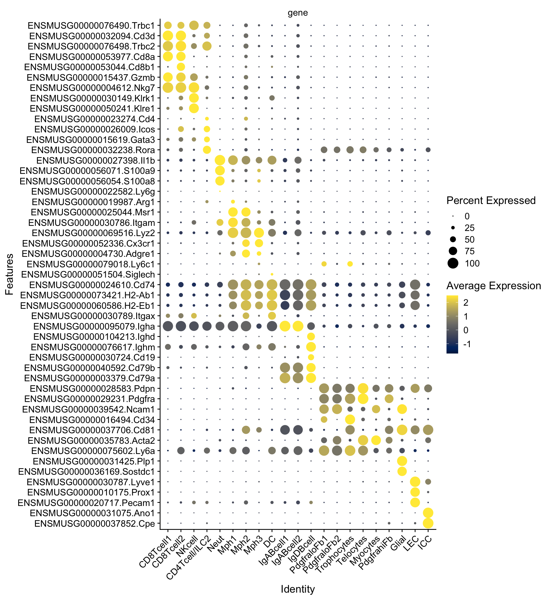
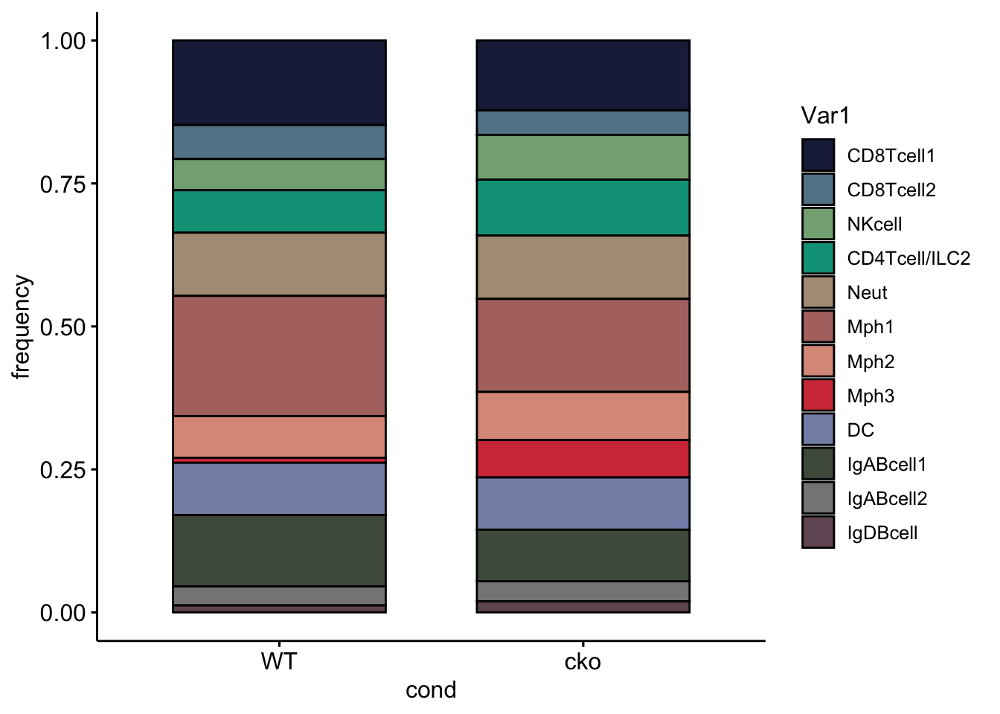
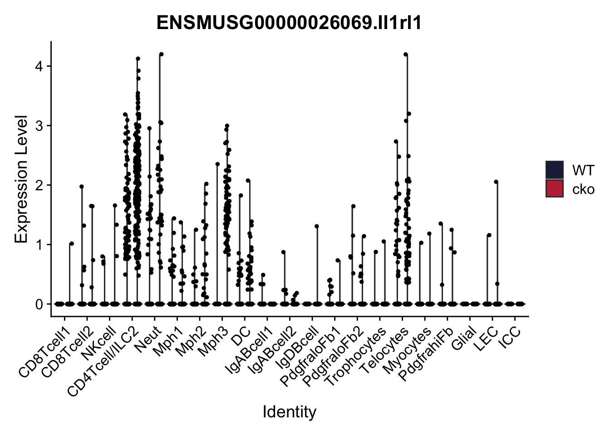
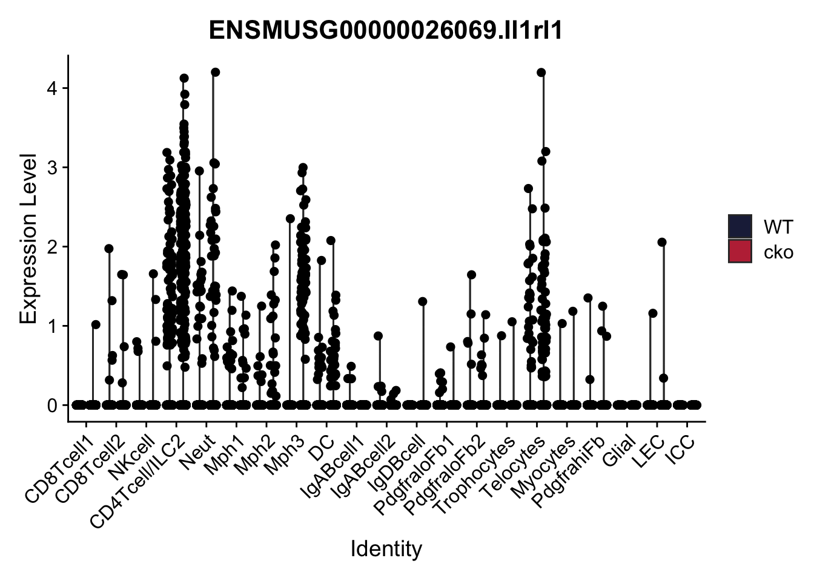

GranulomaAll
A.DeMartin
2025-08-20
Last updated: 2025-08-21
Checks: 6 1
Knit directory: IntGranuloma/
This reproducible R Markdown analysis was created with workflowr (version 1.7.1). The Checks tab describes the reproducibility checks that were applied when the results were created. The Past versions tab lists the development history.
The R Markdown is untracked by Git. To know which version of the R
Markdown file created these results, you’ll want to first commit it to
the Git repo. If you’re still working on the analysis, you can ignore
this warning. When you’re finished, you can run
wflow_publish to commit the R Markdown file and build the
HTML.
Great job! The global environment was empty. Objects defined in the global environment can affect the analysis in your R Markdown file in unknown ways. For reproduciblity it’s best to always run the code in an empty environment.
The command set.seed(20250717) was run prior to running
the code in the R Markdown file. Setting a seed ensures that any results
that rely on randomness, e.g. subsampling or permutations, are
reproducible.
Great job! Recording the operating system, R version, and package versions is critical for reproducibility.
Nice! There were no cached chunks for this analysis, so you can be confident that you successfully produced the results during this run.
Great job! Using relative paths to the files within your workflowr project makes it easier to run your code on other machines.
Great! You are using Git for version control. Tracking code development and connecting the code version to the results is critical for reproducibility.
The results in this page were generated with repository version 954889a. See the Past versions tab to see a history of the changes made to the R Markdown and HTML files.
Note that you need to be careful to ensure that all relevant files for
the analysis have been committed to Git prior to generating the results
(you can use wflow_publish or
wflow_git_commit). workflowr only checks the R Markdown
file, but you know if there are other scripts or data files that it
depends on. Below is the status of the Git repository when the results
were generated:
Ignored files:
Ignored: .DS_Store
Ignored: .Rhistory
Ignored: .Rproj.user/
Untracked files:
Untracked: analysis/GranulomaAll.Rmd
Untracked: analysis/GranulomaMph.Rmd
Note that any generated files, e.g. HTML, png, CSS, etc., are not included in this status report because it is ok for generated content to have uncommitted changes.
There are no past versions. Publish this analysis with
wflow_publish() to start tracking its development.
load packages
library(ExploreSCdataSeurat3)
library(runSeurat3)
library(Seurat)
library(ggpubr)
library(pheatmap)
library(SingleCellExperiment)
library(dplyr)
library(tidyverse)
library(viridis)
library(muscat)
library(circlize)
library(destiny)
library(scater)
library(metap)
library(multtest)
library(clusterProfiler)
library(org.Mm.eg.db)
library(msigdbr)
library(enrichplot)
library(DOSE)
library(grid)
library(gridExtra)
library(ggupset)
library(VennDiagram)
library(dplyr)
library(ggplot2)
library(scran)
library(here)preprocessing
load files and merge
## load objects part1
basedir <- here()
basedir <- paste0(basedir, "/data/dataJuli2022/")
fileNamList <- list.files(path = basedir)
for(i in 1:length(fileNamList)){
seuratS <- readRDS(paste0(basedir, fileNamList[i]))
if(exists("seuratN")){
seuratN <- merge(x = seuratN, y = seuratS)
}else{
seuratN <- seuratS
}
}
remove(seuratS)
table(seuratN$dataset)
## load objects part2
basedir <- here()
basedir <- paste0(basedir, "/data/dataJuli2021/")
fileNamList <- list.files(path = basedir)
for(i in 1:length(fileNamList)){
seuratS <- readRDS(paste0(basedir, fileNamList[i]))
if(exists("seuratN")){
seuratN <- merge(x = seuratN, y = seuratS)
}else{
seuratN <- seuratS
}
}
remove(seuratS)
seuratM <- seuratN
remove(seuratN)
table(seuratM$dataset)
## rerun seurat
seuratM <- NormalizeData (object = seuratM)
seuratM <- FindVariableFeatures(object = seuratM)
seuratM <- ScaleData(object = seuratM, verbose = TRUE)
seuratM <- RunPCA(object=seuratM, npcs = 30, verbose = FALSE)
seuratM <- RunTSNE(object=seuratM, reduction="pca", dims = 1:20)
seuratM <- RunUMAP(object=seuratM, reduction="pca", dims = 1:20)
seuratM <- FindNeighbors(object = seuratM, reduction = "pca", dims= 1:20)
res <- c(0.25, 0.6, 0.8, 0.4)
for (i in 1:length(res)) {
seuratM <- FindClusters(object = seuratM, resolution = res[i], random.seed = 1234)
}
## save seurat object
basedir <- here()
saveRDS(seuratM, file=paste0(basedir, "/data/merged_allgranuloma_wofilter_seurat.rds"))
## remove cluster 21 (0.25res) LEC/Fb doublets
## check counts detected
seuratLEC <- subset(seurat, RNA_snn_res.0.25 =="21")
sce <- as.SingleCellExperiment(seuratLEC)
plotQC2 <- function(sce, feature){
p <- gghistogram(data = as.data.frame(sce@colData),
x=feature,
bins=70,
#title=unique(sce$dataset),
fill = "slategray",
legend = "right", color= "black")
return(p)
}
plotQC2(sce, "total")
plotQC2(sce, "detected")
## remove
table(seurat$RNA_snn_res.0.25)
seurat1 <- subset(seurat, RNA_snn_res.0.25 == "21", invert = TRUE)
table(seurat1$RNA_snn_res.0.25)
## save seurat object
saveRDS(seurat, file=paste0(basedir, "/data/merged_allgranuloma_wofilter_seurat_wocl21.rds"))add metadata
## cluster_name
seurat$cluster_name <- "cluster_name"
seurat$cluster_name[which(seurat$RNA_snn_res.0.25 %in% "0" )] <- "PdgfraloFb1"
seurat$cluster_name[which(seurat$RNA_snn_res.0.25 %in% "1" )] <- "Mph1"
seurat$cluster_name[which(seurat$RNA_snn_res.0.25 %in% "2" )] <- "CD8Tcell1"
seurat$cluster_name[which(seurat$RNA_snn_res.0.25 %in% "3" )] <- "Neut"
seurat$cluster_name[which(seurat$RNA_snn_res.0.25 %in% "4" )] <- "IgABcell1"
seurat$cluster_name[which(seurat$RNA_snn_res.0.25 %in% "5" )] <- "LEC"
seurat$cluster_name[which(seurat$RNA_snn_res.0.25 %in% "6" )] <- "Telocytes"
seurat$cluster_name[which(seurat$RNA_snn_res.0.25 %in% "7" )] <- "DC"
seurat$cluster_name[which(seurat$RNA_snn_res.0.25 %in% "8" )] <- "CD4Tcell/ILC2"
seurat$cluster_name[which(seurat$RNA_snn_res.0.25 %in% "9" )] <- "Mph2"
seurat$cluster_name[which(seurat$RNA_snn_res.0.25 %in% "10" )] <- "NKcell"
seurat$cluster_name[which(seurat$RNA_snn_res.0.25 %in% "11" )] <- "CD8Tcell2"
seurat$cluster_name[which(seurat$RNA_snn_res.0.25 %in% "12" )] <- "Mph3"
seurat$cluster_name[which(seurat$RNA_snn_res.0.25 %in% "13" )] <- "Trophocytes"
seurat$cluster_name[which(seurat$RNA_snn_res.0.25 %in% "14" )] <- "PdgfrahiLy6anegFb"
seurat$cluster_name[which(seurat$RNA_snn_res.0.25 %in% "15" )] <- "IgABcell2"
seurat$cluster_name[which(seurat$RNA_snn_res.0.25 %in% "16" )] <- "Myocytes"
seurat$cluster_name[which(seurat$RNA_snn_res.0.25 %in% "17" )] <- "PdgfraloFb2"
seurat$cluster_name[which(seurat$RNA_snn_res.0.25 %in% "18" )] <- "IgDBcell"
seurat$cluster_name[which(seurat$RNA_snn_res.0.25 %in% "19" )] <- "NC"
seurat$cluster_name[which(seurat$RNA_snn_res.0.25 %in% "20" )] <- "ICC"
table(seurat$cluster_name)
table(seurat$RNA_snn_res.0.25)
## order
Idents(seurat) <- seurat$cluster_name
seurat$cluster_name <- factor(seurat$cluster_name, levels=c("CD8Tcell1","CD8Tcell2","NKcell", "CD4Tcell/ILC2","Neut", "Mph1","Mph2", "Mph3","DC","IgABcell1","IgABcell2","IgDBcell","PdgfraloFb1","PdgfraloFb2", "Trophocytes", "Telocytes", "Myocytes", "PdgfrahiLy6anegFb", "NC", "LEC", "ICC"))
Idents(seurat) <- seurat$cluster_name
table(seurat$cluster_name)
## add slot cluster plus cond2
seurat$cluster_plus_cond2 <- paste0(seurat$seurat_clusters, '_', seurat$cond2)
## cond2
WT <- c("o289411_1-1_20220629_Mu_granuloma_Cxcl13Cre_CD45_HpD4_v3","o289411_2-2_20220629_Mu_granuloma_Cxcl13Cre_FSC_HpD4_v3","9_20210624_Mu_granuloma_Cxcl13Cre_EYFP_HpD4_v3")
cko <- c("o289411_3-3_20220629_Mu_granuloma_Cxcl13Cre_IL33fl_CD45_HpD4_v3","o289411_4-4_20220629_Mu_granuloma_Cxcl13Cre_IL33fl_FSC_HpD4_v3","10_20210624_Mu_granuloma_Cxcl13Cre_IL33flf_EYFP_HpD4_v3")
seurat$cond2 <- "cond2"
seurat$cond2[which(seurat$dataset %in% WT)] <- "WT"
seurat$cond2[which(seurat$dataset %in% cko)] <- "cko"
table(seurat$cond2)
## order
Idents(seurat) <- seurat$cond2
seurat$cond2 <- factor(seurat$cond2, levels=c("WT", "cko"))
Idents(seurat) <- seurat$cond2
table(seurat$cond2)
## save seurat object
saveRDS(seurat, file=paste0(basedir, "/data/merged_allgranuloma_wofilter_seurat_wocl21.rds"))end preprocessing
load merged file granuloma
basedir <- here()
fileNam <- paste0(basedir, "/data/merged_allgranuloma_wofilter_seurat_wocl21.rds")
seurat <- readRDS(fileNam)counts
table(seurat$orig.ident)
34668 table(seurat$cond2)
WT cko
15299 19369 set color vectors
## col clustername
colclustername <- c("#355C7D","#B1746FFF","#202547","#B09C85", "#4e5a4c","#53354A","#2A363B","#8491B4FF","#00A087FF","#DC9989","#84ad83", "#628395","#D33B44","#779d8d","#727077","#868686FF","#F8B195","#FF847C","#725663FF","#904D39","#91D1C2")
names(colclustername) <- c("PdgfraloFb1","Mph1", "CD8Tcell1","Neut", "IgABcell1", "LEC", "Telocytes", "DC", "CD4Tcell/ILC2", "Mph2", "NKcell", "CD8Tcell2", "Mph3", "Trophocytes", "PdgfrahiLy6anegFb", "IgABcell2", "Myocytes", "PdgfraloFb2", "IgDBcell", "NC", "ICC")
## col cond2
colcond2 <- c("#202547","#BE3144")
names(colcond2) <- c("WT", "cko")umaps
clustername
Idents(seurat) <- seurat$cluster_name
DimPlot(seurat, reduction = "umap", cols = colclustername)
DimPlot(seurat, reduction = "umap", cols = colclustername) + theme(legend.position = "none")
condition
Idents(seurat) <- seurat$cond2
DimPlot(seurat, reduction = "umap", cols = colcond2, split.by = "cond2")
DimPlot(seurat, reduction = "umap", cols = colcond2, order = "WT")
DimPlot(seurat, reduction = "umap", cols = colcond2, order="WT") + theme(legend.position = "none")
calculate marker genes
## cluster marker genes
Idents(seurat) <- seurat$cluster_name
levels(seurat)
markerGenes <- FindAllMarkers(seurat, only.pos=T) %>%
dplyr::filter(p_val_adj < 0.01)
write.table(markerGenes,
file= paste0(basedir, "/data/markergenes_cluster_name"),
sep="\t",
quote=F,
row.names=F,
col.names=T)dotplot cluster marker
genes <- data.frame(gene=rownames(seurat)) %>%
mutate(geneID=gsub("^.*\\.", "", gene))
selGenes <- data.frame(geneID=c("Cpe","Ano1","Pecam1","Prox1","Lyve1","Sostdc1","Plp1","Ly6a","Acta2","Cd81","Cd34","Ncam1","Pdgfra","Pdpn", "Cd79a", "Cd79b", "Cd19", "Ighm", "Ighd", "Igha","Itgax","H2-Eb1","H2-Ab1","Cd74","Siglech","Ly6c1","Adgre1","Cx3cr1","Lyz2","Itgam","Msr1", "Arg1", "Ly6g","S100a8", "S100a9", "Il1b", "Rora", "Gata3", "Icos", "Cd4", "Klre1", "Klrk1", "Nkg7", "Gzmb","Cd8b1","Cd8a", "Trbc2", "Cd3d", "Trbc1")) %>% left_join(., genes, by="geneID")
DotPlot(seurat, features = selGenes, group.by= "cluster_name") + RotatedAxis() + scale_color_viridis(option="E") + coord_flip()
subset CD45 negative clusters
seuratCD45neg <- subset(seurat, cluster_name %in% c("PdgfraloFb1","PdgfraloFb2", "Trophocytes", "Telocytes", "Myocytes", "PdgfrahiLy6anegFb", "NC", "LEC", "ICC"))counts
table(seuratCD45neg$cluster_name)
PdgfraloFb1 PdgfraloFb2 Trophocytes Telocytes Myocytes
4607 639 848 2173 653
PdgfrahiLy6anegFb NC LEC ICC
798 180 2201 169 table(seuratCD45neg$orig.ident)
12268 table(seuratCD45neg$cond2)
WT cko
4771 7497 average Heatmap top5 cluster marker CD45 negative (stromal)
Idents(seuratCD45neg) <- seuratCD45neg$cluster_name
levels(seuratCD45neg)[1] "PdgfraloFb1" "PdgfraloFb2" "Trophocytes" "Telocytes"
[5] "Myocytes" "PdgfrahiLy6anegFb" "NC" "LEC"
[9] "ICC" avgHeatmap <- function(seuratCD45neg, selGenes, colVecIdent, colVecCond=NULL,
ordVec=NULL, gapVecR=NULL, gapVecC=NULL,cc=FALSE,
cr=FALSE, condCol=FALSE){
selGenes <- selGenes$gene
## assay data
clusterAssigned <- as.data.frame(Idents(seuratCD45neg)) %>%
dplyr::mutate(cell=rownames(.))
colnames(clusterAssigned)[1] <- "ident"
seuratDat <- GetAssayData(seuratCD45neg)
## genes of interest
genes <- data.frame(gene=rownames(seuratCD45neg)) %>%
mutate(geneID=gsub("^.*\\.", "", gene)) %>% filter(geneID %in% selGenes)
## matrix with averaged cnts per ident
logNormExpres <- as.data.frame(t(as.matrix(
seuratDat[which(rownames(seuratDat) %in% genes$gene),])))
logNormExpres <- logNormExpres %>% dplyr::mutate(cell=rownames(.)) %>%
dplyr::left_join(.,clusterAssigned, by=c("cell")) %>%
dplyr::select(-cell) %>% dplyr::group_by(ident) %>%
dplyr::summarise_all(mean)
logNormExpresMa <- logNormExpres %>% dplyr::select(-ident) %>% as.matrix()
rownames(logNormExpresMa) <- logNormExpres$ident
logNormExpresMa <- t(logNormExpresMa)
rownames(logNormExpresMa) <- gsub("^.*?\\.","",rownames(logNormExpresMa))
## remove genes if they are all the same in all groups
ind <- apply(logNormExpresMa, 1, sd) == 0
logNormExpresMa <- logNormExpresMa[!ind,]
genes <- genes[!ind,]
## color columns according to cluster
annotation_col <- as.data.frame(gsub("(^.*?_)","",
colnames(logNormExpresMa)))%>%
dplyr::mutate(celltype=gsub("(_.*$)","",colnames(logNormExpresMa)))
colnames(annotation_col)[1] <- "col1"
annotation_col <- annotation_col %>%
dplyr::mutate(cond = gsub("(^[0-9]_?)","",col1)) %>%
dplyr::select(cond, celltype)
rownames(annotation_col) <- colnames(logNormExpresMa)
ann_colors = list(
cond = colVecCond,
celltype=colclustername)
if(is.null(ann_colors$cond)){
annotation_col$cond <- NULL
}
## adjust order
logNormExpresMa <- logNormExpresMa[selGenes,]
if(is.null(ordVec)){
ordVec <- levels(seuratCD45neg)
}
logNormExpresMa <- logNormExpresMa[,ordVec]
## scaled row-wise
pheatmap(logNormExpresMa, scale="row" ,treeheight_row = 0, cluster_rows = cr,
cluster_cols = cc,
color = colorRampPalette(c("#2166AC", "#F7F7F7", "#B2182B"))(50),
annotation_col = annotation_col, cellwidth=15, cellheight=10,
annotation_colors = ann_colors, gaps_row = gapVecR, gaps_col = gapVecC)
}
genesPlot <- data.frame(gene=c("Sfrp1", "Clec3b", "Fbln1", "Adamdec1", "C4b", "P2rx1", "Itga8", "Fgfr2", "Cxcl14", "Tmem178", "Cpxm1", "Ccdc80", "Cd34", "Ogn", "Lgi2", "Bmp5", "Tagln", "Tmem158", "Col4a5", "Smoc2", "Myh11", "Actg2", "Acta2", "Myl9", "Tpm2", "Ptn", "Rgs5", "Dpt", "Lum", "Timp1", "Plp1", "Lgi4", "Cryab", "Sostdc1", "Postn", "Mmrn1", "Flt4", "Egfl7", "Lyve1", "Aqp1", "Cpe", "Ano1", "Pde3a", "Pcp4l1", "Grem2"))
levels(seuratCD45neg)[1] "PdgfraloFb1" "PdgfraloFb2" "Trophocytes" "Telocytes"
[5] "Myocytes" "PdgfrahiLy6anegFb" "NC" "LEC"
[9] "ICC" colVec <- colclustername
avgHeatmap(seuratCD45neg, selGenes = genesPlot, colVecIdent = colVec)
abundances
CD45 negative (stromal)
## make count list
datList <- NULL
for(con in unique(seuratCD45neg$cond2)){
seuratSub <- subset(seuratCD45neg, cond2==con)
print(dim(seuratSub))
dat_con <- as.data.frame(table(seuratSub$cluster_name)) %>%
mutate(percent=Freq/ncol(seuratSub)) %>% mutate(cond=con)
datList[[con]] <- dat_con
}[1] 29085 7497
[1] 29085 4771dat_all <- do.call("rbind", datList)
## order x
ordX <- c("WT", "cko")
## plot abundance
ggbarplot(dat_all, x= "cond", y= "percent", fill = "Var1", legend = "right", legend.titel = "cluster", ylab = "frequency", palette = colclustername) + scale_x_discrete(limits=ordX)
CD45 positive (immmune cells)
## subset CD45+ cells
seuratCD45pos <- subset(seurat, cluster_name %in% c("CD8Tcell1","CD8Tcell2","NKcell","CD4Tcell/ILC2","Neut","Mph1","Mph2","Mph3","DC","IgABcell1","IgABcell2","IgDBcell"))
table(seuratCD45pos$cluster_name)
CD8Tcell1 CD8Tcell2 NKcell CD4Tcell/ILC2 Neut Mph1 Mph2
3007 1137 1502 1944 2477 4144 1766
Mph3 DC IgABcell1 IgABcell2 IgDBcell
870 2048 2382 766 357 table(seuratCD45pos$orig.ident)
22400 counts
table(seuratCD45pos$cluster_name)
CD8Tcell1 CD8Tcell2 NKcell CD4Tcell/ILC2 Neut Mph1 Mph2
3007 1137 1502 1944 2477 4144 1766
Mph3 DC IgABcell1 IgABcell2 IgDBcell
870 2048 2382 766 357 table(seuratCD45pos$orig.ident)
22400 table(seuratCD45pos$cond2)
WT cko
10528 11872 ## make count list
datList <- NULL
for(con in unique(seuratCD45pos$cond2)){
seuratSub <- subset(seuratCD45pos, cond2==con)
print(dim(seuratSub))
dat_con <- as.data.frame(table(seuratSub$cluster_name)) %>%
mutate(percent=Freq/ncol(seuratSub)) %>% mutate(cond=con)
datList[[con]] <- dat_con
}[1] 29085 11872
[1] 29085 10528dat_all <- do.call("rbind", datList)
## order x
ordX <- c("WT", "cko")
## plot abundance
ggbarplot(dat_all, x= "cond", y= "percent", fill = "Var1", legend = "right", legend.titel = "cluster", ylab = "frequency", palette = colclustername) + scale_x_discrete(limits=ordX)
top DE genes
assign cell types
seurat$celltype <- "celltype"
seurat$celltype[which(seurat$cluster_name %in% c("CD8Tcell1", "CD8Tcell2"))] <- "CD8Tcells"
seurat$celltype[which(seurat$cluster_name %in% c("NKcell"))] <- "NKcells"
seurat$celltype[which(seurat$cluster_name %in% c("CD4Tcell/ILC2"))] <- "CD4Tcell/ILC2"
seurat$celltype[which(seurat$cluster_name %in% c("Neut"))] <- "Neut"
seurat$celltype[which(seurat$cluster_name %in% c("Mph1", "Mph2", "Mph3"))] <- "Macrophages"
seurat$celltype[which(seurat$cluster_name %in% c("DC"))] <- "DC"
seurat$celltype[which(seurat$cluster_name %in% c("IgABcell1","IgABcell2","IgDBcell"))] <- "Bcells"
seurat$celltype[which(seurat$cluster_name %in% c("PdgfraloFb1","PdgfraloFb2", "Trophocytes", "Telocytes", "Myocytes", "PdgfrahiLy6anegFb"))] <- "Fb"
seurat$celltype[which(seurat$cluster_name %in% c("NC"))] <- "NC"
seurat$celltype[which(seurat$cluster_name %in% c("LEC"))] <- "LEC"
seurat$celltype[which(seurat$cluster_name %in% c("ICC"))] <- "ICC"
table(seurat$celltype)
Bcells CD4Tcell/ILC2 CD8Tcells DC Fb ICC LEC
3505 1944 4144 2048 9718 169 2201
Macrophages NC Neut NKcells
6780 180 2477 1502 ## order
Idents(seurat) <- seurat$celltype
seurat$celltype <- factor(seurat$celltype, levels=c("CD8Tcells","NKcells", "CD4Tcell/ILC2","Neut","Macrophages","DC","Bcells", "Fb", "NC", "LEC", "ICC"))
Idents(seurat) <- seurat$celltype
table(seurat$celltype)
CD8Tcells NKcells CD4Tcell/ILC2 Neut Macrophages DC Bcells
4144 1502 1944 2477 6780 2048 3505
Fb NC LEC ICC
9718 180 2201 169 set color vector celltypes
colcelltype <- c("#202547","#84ad83","#00A087FF","#B09C85","#B1746FFF","#8491B4FF", "#4e5a4c","#355C7D","#904D39","#725663FF","#91D1C2")
names(colcelltype) <- c("CD8Tcells","NKcells", "CD4Tcell/ILC2","Neut","Macrophages","DC","Bcells", "Fb", "NC", "LEC", "ICC")umap
celltype
Idents(seurat) <- seurat$celltype
DimPlot(seurat, reduction = "umap", cols = colcelltype)
DimPlot(seurat, reduction = "umap", cols = colcelltype) + theme(legend.position = "none")
calculate DE genes for each immune celltype according to WT/cko
Idents(seurat) <- seurat$cond2
## top 100 DE genes CD8Tcells
seuratCD8Tcells <- subset(seurat, celltype == "CD8Tcells")
table(seuratCD8Tcells$cond2)
WT cko
2183 1961 levels(seuratCD8Tcells)[1] "WT" "cko"DEGenesCD8TcellsWTcko <- FindAllMarkers(seuratCD8Tcells, logfc.threshold = 0.1) %>%
dplyr::filter(p_val_adj < 0.1) %>% mutate(celltype = "CD8Tcells")
DEGenesCD8TcellsWTcko100 <- DEGenesCD8TcellsWTcko %>% top_n(100, avg_log2FC)
## top 100 DE genes NKcells
seuratNKcells <- subset(seurat, celltype == "NKcells")
table(seuratNKcells$cond2)
WT cko
574 928 levels(seuratNKcells)[1] "WT" "cko"DEGenesNKcellsWTcko <- FindAllMarkers(seuratNKcells,logfc.threshold = 0.1) %>%
dplyr::filter(p_val_adj < 0.1) %>% mutate(celltype = "NKcells")
DEGenesNKcellsWTcko100 <- DEGenesNKcellsWTcko %>% top_n(100, avg_log2FC)
## top 100 DE genes CD4Tcell/ILC2
seuratCD4TcellILC2 <- subset(seurat, celltype == "CD4Tcell/ILC2")
table(seuratCD4TcellILC2$cond2)
WT cko
782 1162 levels(seuratCD4TcellILC2)[1] "WT" "cko"DEGenesCD4TcellILC2WTcko <- FindAllMarkers(seuratCD4TcellILC2,logfc.threshold = 0.1) %>%
dplyr::filter(p_val_adj < 0.1) %>% mutate(celltype = "CD4Tcell/ILC2")
DEGenesCD4TcellILC2WTcko100 <- DEGenesCD4TcellILC2WTcko %>% top_n(100, avg_log2FC)
## top 100 DE genes Neut
seuratNeut <- subset(seurat, celltype == "Neut")
table(seuratNeut$cond2)
WT cko
1163 1314 levels(seuratNeut)[1] "WT" "cko"DEGenesNeutWTcko <- FindAllMarkers(seuratNeut,logfc.threshold = 0.1) %>%
dplyr::filter(p_val_adj < 0.1) %>% mutate(celltype = "Neut")
DEGenesNeutWTcko100 <- DEGenesNeutWTcko %>% top_n(100, avg_log2FC)
## top 100 DE genes Macrophages
seuratMacrophages <- subset(seurat, celltype == "Macrophages")
table(seuratMacrophages$cond2)
WT cko
3073 3707 levels(seuratMacrophages)[1] "WT" "cko"DEGenesMacrophagesWTcko <- FindAllMarkers(seuratMacrophages,logfc.threshold = 0.1) %>%
dplyr::filter(p_val_adj < 0.1) %>% mutate(celltype = "Macrophages")
DEGenesMacrophagesWTcko100 <- DEGenesMacrophagesWTcko %>% top_n(100, avg_log2FC)
## top 100 DE genes DC
seuratDC <- subset(seurat, celltype == "DC")
table(seuratDC$cond2)
WT cko
963 1085 levels(seuratDC)[1] "WT" "cko"DEGenesDCWTcko <- FindAllMarkers(seuratDC, logfc.threshold = 0.1) %>%
dplyr::filter(p_val_adj < 0.1) %>% mutate(celltype = "DC")
DEGenesDCWTcko100 <- DEGenesDCWTcko %>% top_n(100, avg_log2FC)
## top 100 DE genes Bcells
seuratBcells <- subset(seurat, celltype == "Bcells")
table(seuratBcells$cond2)
WT cko
1790 1715 levels(seuratBcells)[1] "WT" "cko"DEGenesBcellsWTcko <- FindAllMarkers(seuratBcells,logfc.threshold = 0.1) %>%
dplyr::filter(p_val_adj < 0.1) %>% mutate(celltype = "Bcells")
DEGenesBcellsWTcko100 <- DEGenesBcellsWTcko %>% top_n(100, avg_log2FC)
## joint all
DEGenesAll100WTcko <- full_join(DEGenesCD8TcellsWTcko100, DEGenesNKcellsWTcko100)
DEGenesAll100WTcko <- full_join(DEGenesAll100WTcko, DEGenesCD4TcellILC2WTcko100)
DEGenesAll100WTcko <- full_join(DEGenesAll100WTcko, DEGenesNeutWTcko100)
DEGenesAll100WTcko <- full_join(DEGenesAll100WTcko, DEGenesMacrophagesWTcko100)
DEGenesAll100WTcko <- full_join(DEGenesAll100WTcko, DEGenesDCWTcko100)
DEGenesAll100WTcko <- full_join(DEGenesAll100WTcko, DEGenesBcellsWTcko100)distribution of log2FC of overall top 100 DE genes
ggdensity(DEGenesAll100WTcko, x = "avg_log2FC", add= "median", rug = TRUE, color = "celltype", fill = "celltype", palette = colcelltype)
ggviolin(DEGenesAll100WTcko, x = "celltype", y = "avg_log2FC", fill = "celltype", palette = colcelltype, add = "median_iqr")
ggboxplot(DEGenesAll100WTcko, x = "celltype", y = "avg_log2FC", color = "celltype", palette = colcelltype ,add = "jitter")
violin Il1rl1
Idents(seurat) <- seurat$cluster_name
VlnPlot(object=seurat, features = "ENSMUSG00000026069.Il1rl1", cols = colcond2, split.by = "cond2", pt.size = 1)
VlnPlot(object=seurat, features = "ENSMUSG00000026069.Il1rl1", cols = colcond2, split.by = "cond2", pt.size = 2)
session info
date()[1] "Thu Aug 21 16:25:43 2025"sessionInfo()R version 4.4.0 (2024-04-24)
Platform: x86_64-apple-darwin20
Running under: macOS Ventura 13.7.7
Matrix products: default
BLAS: /Library/Frameworks/R.framework/Versions/4.4-x86_64/Resources/lib/libRblas.0.dylib
LAPACK: /Library/Frameworks/R.framework/Versions/4.4-x86_64/Resources/lib/libRlapack.dylib; LAPACK version 3.12.0
locale:
[1] en_US.UTF-8/en_US.UTF-8/en_US.UTF-8/C/en_US.UTF-8/en_US.UTF-8
time zone: Europe/Zurich
tzcode source: internal
attached base packages:
[1] grid stats4 stats graphics grDevices utils datasets methods base
other attached packages:
[1] here_1.0.1 scran_1.32.0 VennDiagram_1.7.3
[4] futile.logger_1.4.3 ggupset_0.4.1 gridExtra_2.3
[7] DOSE_3.30.5 enrichplot_1.24.4 msigdbr_25.1.1
[10] org.Mm.eg.db_3.19.1 AnnotationDbi_1.66.0 clusterProfiler_4.12.6
[13] multtest_2.60.0 metap_1.12 scater_1.32.1
[16] scuttle_1.14.0 destiny_3.18.0 circlize_0.4.16
[19] muscat_1.18.0 viridis_0.6.5 viridisLite_0.4.2
[22] lubridate_1.9.4 forcats_1.0.0 stringr_1.5.1
[25] purrr_1.1.0 readr_2.1.5 tidyr_1.3.1
[28] tibble_3.3.0 tidyverse_2.0.0 dplyr_1.1.4
[31] SingleCellExperiment_1.26.0 SummarizedExperiment_1.34.0 Biobase_2.64.0
[34] GenomicRanges_1.56.2 GenomeInfoDb_1.40.1 IRanges_2.38.1
[37] S4Vectors_0.42.1 BiocGenerics_0.50.0 MatrixGenerics_1.16.0
[40] matrixStats_1.5.0 pheatmap_1.0.13 ggpubr_0.6.1
[43] ggplot2_3.5.2 Seurat_5.3.0 SeuratObject_5.1.0
[46] sp_2.2-0 runSeurat3_0.1.0 ExploreSCdataSeurat3_0.1.0
loaded via a namespace (and not attached):
[1] igraph_2.1.4 ica_1.0-3 plotly_4.11.0
[4] Formula_1.2-5 zlibbioc_1.50.0 tidyselect_1.2.1
[7] bit_4.6.0 doParallel_1.0.17 clue_0.3-66
[10] lattice_0.22-7 rjson_0.2.23 blob_1.2.4
[13] S4Arrays_1.4.1 pbkrtest_0.5.5 parallel_4.4.0
[16] png_0.1-8 plotrix_3.8-4 cli_3.6.5
[19] ggplotify_0.1.2 goftest_1.2-3 VIM_6.2.2
[22] variancePartition_1.34.0 bluster_1.14.0 BiocNeighbors_1.22.0
[25] shadowtext_0.1.5 uwot_0.2.3 curl_6.4.0
[28] tidytree_0.4.6 mime_0.13 evaluate_1.0.4
[31] ComplexHeatmap_2.20.0 stringi_1.8.7 backports_1.5.0
[34] lmerTest_3.1-3 qqconf_1.3.2 httpuv_1.6.16
[37] magrittr_2.0.3 rappdirs_0.3.3 splines_4.4.0
[40] ggraph_2.2.1 sctransform_0.4.2 ggbeeswarm_0.7.2
[43] DBI_1.2.3 jquerylib_0.1.4 smoother_1.3
[46] withr_3.0.2 git2r_0.36.2 corpcor_1.6.10
[49] reformulas_0.4.1 class_7.3-23 rprojroot_2.1.0
[52] lmtest_0.9-40 tidygraph_1.3.1 formatR_1.14
[55] colourpicker_1.3.0 htmlwidgets_1.6.4 fs_1.6.6
[58] ggrepel_0.9.6 labeling_0.4.3 fANCOVA_0.6-1
[61] SparseArray_1.4.8 DESeq2_1.44.0 ranger_0.17.0
[64] DEoptimR_1.1-4 reticulate_1.43.0 hexbin_1.28.5
[67] zoo_1.8-14 XVector_0.44.0 knitr_1.50
[70] ggplot.multistats_1.0.1 UCSC.utils_1.0.0 RhpcBLASctl_0.23-42
[73] timechange_0.3.0 foreach_1.5.2 patchwork_1.3.1
[76] caTools_1.18.3 data.table_1.17.8 ggtree_3.12.0
[79] R.oo_1.27.1 RSpectra_0.16-2 irlba_2.3.5.1
[82] ggrastr_1.0.2 fastDummies_1.7.5 gridGraphics_0.5-1
[85] lazyeval_0.2.2 yaml_2.3.10 survival_3.8-3
[88] scattermore_1.2 crayon_1.5.3 RcppAnnoy_0.0.22
[91] RColorBrewer_1.1-3 progressr_0.15.1 tweenr_2.0.3
[94] later_1.4.2 ggridges_0.5.6 codetools_0.2-20
[97] GlobalOptions_0.1.2 aod_1.3.3 KEGGREST_1.44.1
[100] Rtsne_0.17 shape_1.4.6.1 limma_3.60.6
[103] pkgconfig_2.0.3 TMB_1.9.17 spatstat.univar_3.1-4
[106] mathjaxr_1.8-0 EnvStats_3.1.0 aplot_0.2.8
[109] scatterplot3d_0.3-44 ape_5.8-1 spatstat.sparse_3.1-0
[112] xtable_1.8-4 car_3.1-3 plyr_1.8.9
[115] httr_1.4.7 rbibutils_2.3 tools_4.4.0
[118] globals_0.18.0 beeswarm_0.4.0 broom_1.0.9
[121] nlme_3.1-168 lambda.r_1.2.4 assertthat_0.2.1
[124] lme4_1.1-37 digest_0.6.37 numDeriv_2016.8-1.1
[127] Matrix_1.7-3 farver_2.1.2 tzdb_0.5.0
[130] remaCor_0.0.18 reshape2_1.4.4 yulab.utils_0.2.0
[133] glue_1.8.0 cachem_1.1.0 polyclip_1.10-7
[136] generics_0.1.4 Biostrings_2.72.1 mvtnorm_1.3-3
[139] presto_1.0.0 parallelly_1.45.1 mnormt_2.1.1
[142] statmod_1.5.0 RcppHNSW_0.6.0 ScaledMatrix_1.12.0
[145] carData_3.0-5 minqa_1.2.8 pbapply_1.7-4
[148] httr2_1.2.1 spam_2.11-1 gson_0.1.0
[151] dqrng_0.4.1 graphlayouts_1.2.2 gtools_3.9.5
[154] ggsignif_0.6.4 RcppEigen_0.3.4.0.2 shiny_1.11.1
[157] GenomeInfoDbData_1.2.12 glmmTMB_1.1.11 R.utils_2.13.0
[160] memoise_2.0.1 rmarkdown_2.29 scales_1.4.0
[163] R.methodsS3_1.8.2 future_1.67.0 RANN_2.6.2
[166] Cairo_1.6-2 spatstat.data_3.1-6 rstudioapi_0.17.1
[169] cluster_2.1.8.1 mutoss_0.1-13 spatstat.utils_3.1-5
[172] hms_1.1.3 fitdistrplus_1.2-4 cowplot_1.2.0
[175] colorspace_2.1-1 rlang_1.1.6 DelayedMatrixStats_1.26.0
[178] sparseMatrixStats_1.16.0 xts_0.14.1 dotCall64_1.2
[181] shinydashboard_0.7.3 ggforce_0.5.0 laeken_0.5.3
[184] mgcv_1.9-3 xfun_0.52 e1071_1.7-16
[187] TH.data_1.1-3 iterators_1.0.14 abind_1.4-8
[190] GOSemSim_2.30.2 treeio_1.28.0 futile.options_1.0.1
[193] bitops_1.0-9 Rdpack_2.6.4 promises_1.3.3
[196] scatterpie_0.2.5 RSQLite_2.4.2 qvalue_2.36.0
[199] sandwich_3.1-1 fgsea_1.30.0 DelayedArray_0.30.1
[202] proxy_0.4-27 GO.db_3.19.1 compiler_4.4.0
[205] prettyunits_1.2.0 boot_1.3-31 beachmat_2.20.0
[208] listenv_0.9.1 Rcpp_1.1.0 edgeR_4.2.2
[211] workflowr_1.7.1 BiocSingular_1.20.0 tensor_1.5.1
[214] MASS_7.3-65 progress_1.2.3 BiocParallel_1.38.0
[217] babelgene_22.9 spatstat.random_3.4-1 R6_2.6.1
[220] fastmap_1.2.0 multcomp_1.4-28 fastmatch_1.1-6
[223] rstatix_0.7.2 vipor_0.4.7 TTR_0.24.4
[226] ROCR_1.0-11 TFisher_0.2.0 rsvd_1.0.5
[229] vcd_1.4-13 nnet_7.3-20 gtable_0.3.6
[232] KernSmooth_2.23-26 miniUI_0.1.2 deldir_2.0-4
[235] htmltools_0.5.8.1 ggthemes_5.1.0 bit64_4.6.0-1
[238] spatstat.explore_3.5-2 lifecycle_1.0.4 blme_1.0-6
[241] S7_0.2.0 nloptr_2.2.1 sass_0.4.10
[244] vctrs_0.6.5 robustbase_0.99-4-1 spatstat.geom_3.5-0
[247] sn_2.1.1 ggfun_0.2.0 future.apply_1.20.0
[250] bslib_0.9.0 pillar_1.11.0 gplots_3.2.0
[253] pcaMethods_1.96.0 metapod_1.12.0 locfit_1.5-9.12
[256] jsonlite_2.0.0 GetoptLong_1.0.5
sessionInfo()R version 4.4.0 (2024-04-24)
Platform: x86_64-apple-darwin20
Running under: macOS Ventura 13.7.7
Matrix products: default
BLAS: /Library/Frameworks/R.framework/Versions/4.4-x86_64/Resources/lib/libRblas.0.dylib
LAPACK: /Library/Frameworks/R.framework/Versions/4.4-x86_64/Resources/lib/libRlapack.dylib; LAPACK version 3.12.0
locale:
[1] en_US.UTF-8/en_US.UTF-8/en_US.UTF-8/C/en_US.UTF-8/en_US.UTF-8
time zone: Europe/Zurich
tzcode source: internal
attached base packages:
[1] grid stats4 stats graphics grDevices utils datasets methods base
other attached packages:
[1] here_1.0.1 scran_1.32.0 VennDiagram_1.7.3
[4] futile.logger_1.4.3 ggupset_0.4.1 gridExtra_2.3
[7] DOSE_3.30.5 enrichplot_1.24.4 msigdbr_25.1.1
[10] org.Mm.eg.db_3.19.1 AnnotationDbi_1.66.0 clusterProfiler_4.12.6
[13] multtest_2.60.0 metap_1.12 scater_1.32.1
[16] scuttle_1.14.0 destiny_3.18.0 circlize_0.4.16
[19] muscat_1.18.0 viridis_0.6.5 viridisLite_0.4.2
[22] lubridate_1.9.4 forcats_1.0.0 stringr_1.5.1
[25] purrr_1.1.0 readr_2.1.5 tidyr_1.3.1
[28] tibble_3.3.0 tidyverse_2.0.0 dplyr_1.1.4
[31] SingleCellExperiment_1.26.0 SummarizedExperiment_1.34.0 Biobase_2.64.0
[34] GenomicRanges_1.56.2 GenomeInfoDb_1.40.1 IRanges_2.38.1
[37] S4Vectors_0.42.1 BiocGenerics_0.50.0 MatrixGenerics_1.16.0
[40] matrixStats_1.5.0 pheatmap_1.0.13 ggpubr_0.6.1
[43] ggplot2_3.5.2 Seurat_5.3.0 SeuratObject_5.1.0
[46] sp_2.2-0 runSeurat3_0.1.0 ExploreSCdataSeurat3_0.1.0
loaded via a namespace (and not attached):
[1] igraph_2.1.4 ica_1.0-3 plotly_4.11.0
[4] Formula_1.2-5 zlibbioc_1.50.0 tidyselect_1.2.1
[7] bit_4.6.0 doParallel_1.0.17 clue_0.3-66
[10] lattice_0.22-7 rjson_0.2.23 blob_1.2.4
[13] S4Arrays_1.4.1 pbkrtest_0.5.5 parallel_4.4.0
[16] png_0.1-8 plotrix_3.8-4 cli_3.6.5
[19] ggplotify_0.1.2 goftest_1.2-3 VIM_6.2.2
[22] variancePartition_1.34.0 bluster_1.14.0 BiocNeighbors_1.22.0
[25] shadowtext_0.1.5 uwot_0.2.3 curl_6.4.0
[28] tidytree_0.4.6 mime_0.13 evaluate_1.0.4
[31] ComplexHeatmap_2.20.0 stringi_1.8.7 backports_1.5.0
[34] lmerTest_3.1-3 qqconf_1.3.2 httpuv_1.6.16
[37] magrittr_2.0.3 rappdirs_0.3.3 splines_4.4.0
[40] ggraph_2.2.1 sctransform_0.4.2 ggbeeswarm_0.7.2
[43] DBI_1.2.3 jquerylib_0.1.4 smoother_1.3
[46] withr_3.0.2 git2r_0.36.2 corpcor_1.6.10
[49] reformulas_0.4.1 class_7.3-23 rprojroot_2.1.0
[52] lmtest_0.9-40 tidygraph_1.3.1 formatR_1.14
[55] colourpicker_1.3.0 htmlwidgets_1.6.4 fs_1.6.6
[58] ggrepel_0.9.6 labeling_0.4.3 fANCOVA_0.6-1
[61] SparseArray_1.4.8 DESeq2_1.44.0 ranger_0.17.0
[64] DEoptimR_1.1-4 reticulate_1.43.0 hexbin_1.28.5
[67] zoo_1.8-14 XVector_0.44.0 knitr_1.50
[70] ggplot.multistats_1.0.1 UCSC.utils_1.0.0 RhpcBLASctl_0.23-42
[73] timechange_0.3.0 foreach_1.5.2 patchwork_1.3.1
[76] caTools_1.18.3 data.table_1.17.8 ggtree_3.12.0
[79] R.oo_1.27.1 RSpectra_0.16-2 irlba_2.3.5.1
[82] ggrastr_1.0.2 fastDummies_1.7.5 gridGraphics_0.5-1
[85] lazyeval_0.2.2 yaml_2.3.10 survival_3.8-3
[88] scattermore_1.2 crayon_1.5.3 RcppAnnoy_0.0.22
[91] RColorBrewer_1.1-3 progressr_0.15.1 tweenr_2.0.3
[94] later_1.4.2 ggridges_0.5.6 codetools_0.2-20
[97] GlobalOptions_0.1.2 aod_1.3.3 KEGGREST_1.44.1
[100] Rtsne_0.17 shape_1.4.6.1 limma_3.60.6
[103] pkgconfig_2.0.3 TMB_1.9.17 spatstat.univar_3.1-4
[106] mathjaxr_1.8-0 EnvStats_3.1.0 aplot_0.2.8
[109] scatterplot3d_0.3-44 ape_5.8-1 spatstat.sparse_3.1-0
[112] xtable_1.8-4 car_3.1-3 plyr_1.8.9
[115] httr_1.4.7 rbibutils_2.3 tools_4.4.0
[118] globals_0.18.0 beeswarm_0.4.0 broom_1.0.9
[121] nlme_3.1-168 lambda.r_1.2.4 assertthat_0.2.1
[124] lme4_1.1-37 digest_0.6.37 numDeriv_2016.8-1.1
[127] Matrix_1.7-3 farver_2.1.2 tzdb_0.5.0
[130] remaCor_0.0.18 reshape2_1.4.4 yulab.utils_0.2.0
[133] glue_1.8.0 cachem_1.1.0 polyclip_1.10-7
[136] generics_0.1.4 Biostrings_2.72.1 mvtnorm_1.3-3
[139] presto_1.0.0 parallelly_1.45.1 mnormt_2.1.1
[142] statmod_1.5.0 RcppHNSW_0.6.0 ScaledMatrix_1.12.0
[145] carData_3.0-5 minqa_1.2.8 pbapply_1.7-4
[148] httr2_1.2.1 spam_2.11-1 gson_0.1.0
[151] dqrng_0.4.1 graphlayouts_1.2.2 gtools_3.9.5
[154] ggsignif_0.6.4 RcppEigen_0.3.4.0.2 shiny_1.11.1
[157] GenomeInfoDbData_1.2.12 glmmTMB_1.1.11 R.utils_2.13.0
[160] memoise_2.0.1 rmarkdown_2.29 scales_1.4.0
[163] R.methodsS3_1.8.2 future_1.67.0 RANN_2.6.2
[166] Cairo_1.6-2 spatstat.data_3.1-6 rstudioapi_0.17.1
[169] cluster_2.1.8.1 mutoss_0.1-13 spatstat.utils_3.1-5
[172] hms_1.1.3 fitdistrplus_1.2-4 cowplot_1.2.0
[175] colorspace_2.1-1 rlang_1.1.6 DelayedMatrixStats_1.26.0
[178] sparseMatrixStats_1.16.0 xts_0.14.1 dotCall64_1.2
[181] shinydashboard_0.7.3 ggforce_0.5.0 laeken_0.5.3
[184] mgcv_1.9-3 xfun_0.52 e1071_1.7-16
[187] TH.data_1.1-3 iterators_1.0.14 abind_1.4-8
[190] GOSemSim_2.30.2 treeio_1.28.0 futile.options_1.0.1
[193] bitops_1.0-9 Rdpack_2.6.4 promises_1.3.3
[196] scatterpie_0.2.5 RSQLite_2.4.2 qvalue_2.36.0
[199] sandwich_3.1-1 fgsea_1.30.0 DelayedArray_0.30.1
[202] proxy_0.4-27 GO.db_3.19.1 compiler_4.4.0
[205] prettyunits_1.2.0 boot_1.3-31 beachmat_2.20.0
[208] listenv_0.9.1 Rcpp_1.1.0 edgeR_4.2.2
[211] workflowr_1.7.1 BiocSingular_1.20.0 tensor_1.5.1
[214] MASS_7.3-65 progress_1.2.3 BiocParallel_1.38.0
[217] babelgene_22.9 spatstat.random_3.4-1 R6_2.6.1
[220] fastmap_1.2.0 multcomp_1.4-28 fastmatch_1.1-6
[223] rstatix_0.7.2 vipor_0.4.7 TTR_0.24.4
[226] ROCR_1.0-11 TFisher_0.2.0 rsvd_1.0.5
[229] vcd_1.4-13 nnet_7.3-20 gtable_0.3.6
[232] KernSmooth_2.23-26 miniUI_0.1.2 deldir_2.0-4
[235] htmltools_0.5.8.1 ggthemes_5.1.0 bit64_4.6.0-1
[238] spatstat.explore_3.5-2 lifecycle_1.0.4 blme_1.0-6
[241] S7_0.2.0 nloptr_2.2.1 sass_0.4.10
[244] vctrs_0.6.5 robustbase_0.99-4-1 spatstat.geom_3.5-0
[247] sn_2.1.1 ggfun_0.2.0 future.apply_1.20.0
[250] bslib_0.9.0 pillar_1.11.0 gplots_3.2.0
[253] pcaMethods_1.96.0 metapod_1.12.0 locfit_1.5-9.12
[256] jsonlite_2.0.0 GetoptLong_1.0.5